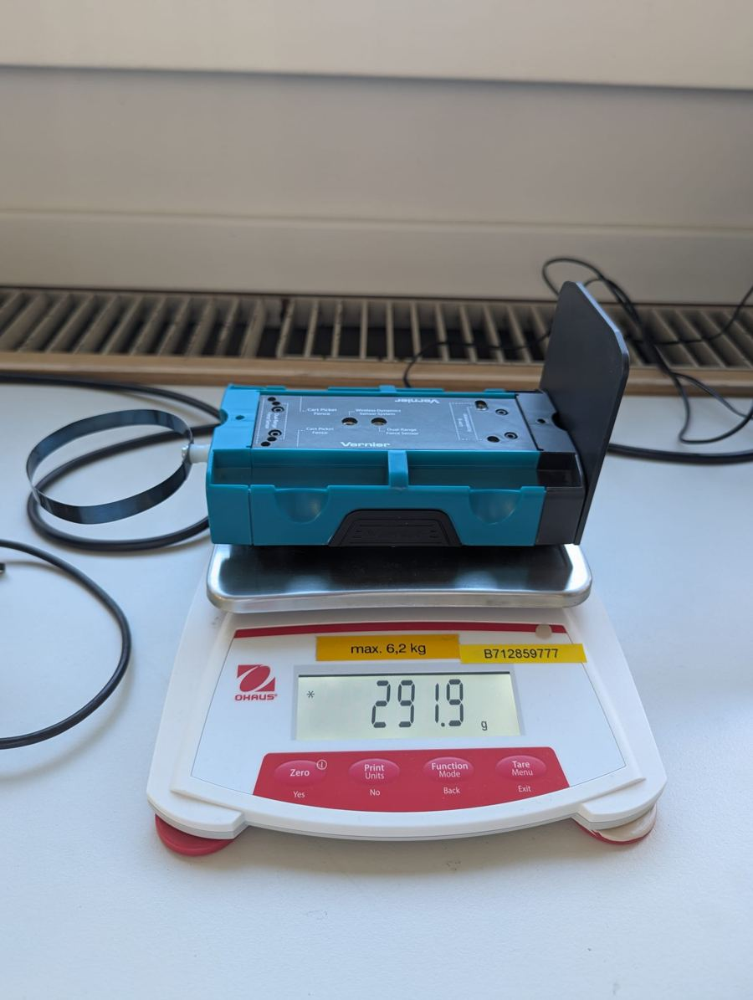
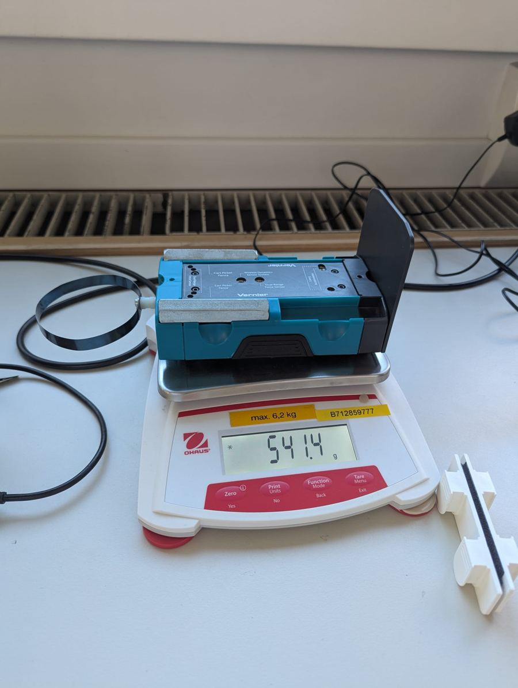

Einleitung
Stösse kommen in Technik und Alltag oft vor, etwa bei Auffahrunfällen oder beim Ankuppeln von Eisenbahnwagen. Wie Impuls und Energie dabei übertragen werden, hängt von der Art des Kontakts ab.
Wir liessen zwei Wagen auf einer Schiene zusammenstossen, mit Feder (elastisch), Schaumstoffkeil (teilelastisch) oder Klett (inelastisch), bei verschiedenen Massen und Anfangsgeschwindigkeiten. Ziel ist es,
- die Impulserhaltung für alle drei Stossarten zu prüfen,
- die kinetische Energie vor und nach dem Stoss zu vergleichen,
- Kraftverlauf, Stossdauer und Kraftstoss zu bestimmen und
- die Messungen mit einem Federmodell aus Berkeley Madonna zu vergleichen.
Diese Seite ergänzt den Bericht. Ein Klick auf einen Stoss in der Tabelle öffnet die Wiedergabe (mit zuschaltbarer Simulation) und die Diagramme x(t), v(t) und a(t). Alle Werte stehen zusätzlich unter „Tabellen“.
Aufbau
Zwei Wagen auf einer gemeinsamen Schiene, an jedem Ende ein Ultraschallsensor. Die Massen haben wir mit derselben Waage bestimmt.




Stösse
12 Messungen, drei Stossarten mit je vier Aufbauten. Eine Zeile anklicken öffnet den Stoss.
| Nr. | Aufbau | v₁m/s | v₂m/s | v₁′m/s | v₂′m/s | m₂/m₁aus Δv | m₁kg | m₂kg | pkg·m/s | p′kg·m/s | ΔE% |
|---|
* unsicher: Wagen 2 ist nach dem Stoss nur kurz messbar (Totzone des Sensors).
Der Stoss
Der gewählte Stoss, abgespielt aus den geglätteten Messwerten. Gestrichelt: die Simulation mit denselben Startwerten.
Versuchsaufbau
Zwei Wagen auf einer Schiene, an jedem Ende ein Ultraschallsensor (LoggerPro, 200 Hz). Beide Wagen tragen denselben Aufsatz: Feder, Schaumstoffkeil oder Klett. Die x-Achse läuft von Sensor 2 (x = 0) zu Sensor 1; Wagen 1 startet bei Sensor 1 und fährt in −x, Wagen 2 ruht oder fährt ihm entgegen.
Theorie: Impulserhaltung
Von x(t) zu v(t) und a(t)
Gemessen wird nur der Ort, v(t) und a(t) sind daraus abgeleitet.
Theorie: Ableitungen und Kraftstoss
Federmodell
Nachbau unseres Berkeley-Madonna-Modells, gestartet mit Ort und Geschwindigkeit der gewählten Messung.
Annahmen des Modells
- Kraft nur bei Berührung: F = k·Δ, wobei Δ die Stauchung gegenüber dem Abstand beim Erstkontakt ist (aus der Messung).
- Keine Reibung, keine Kraft ausserhalb des Stosses, keine Schienenenden.
- Die reine Feder gibt alle Energie zurück, sagt also immer e = 1 voraus. Mit k = 1000 N/m dauert der Stoss nur Hundertstelsekunden, gemessen sind rund 0,2 s.
- Erweiterung, nicht im Original: eine Dämpfung c, die nur während der Stauchung bremst. Damit lassen sich Schaumstoff und Klett annähern.
- Massen gewogen: leicht 291,9 g, schwer 541,4 g (Wagen mit 2 Zusatzgewichten à 125,2 g).
Tabellen
Die wichtigsten Werte der Auswertung.
Tabellen werden berechnet …